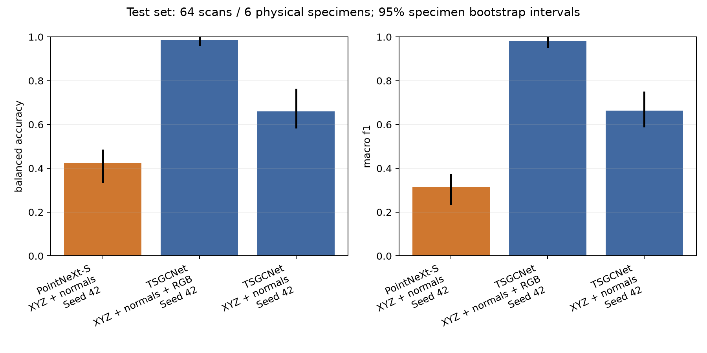
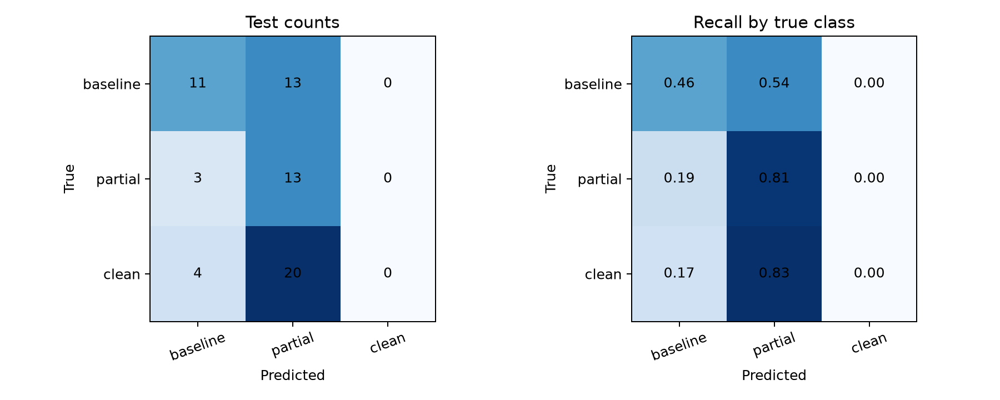
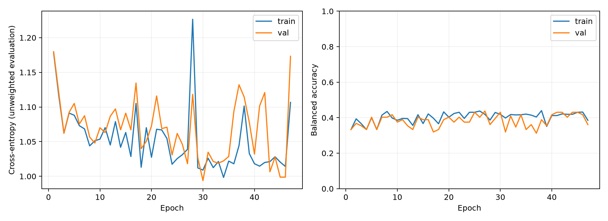
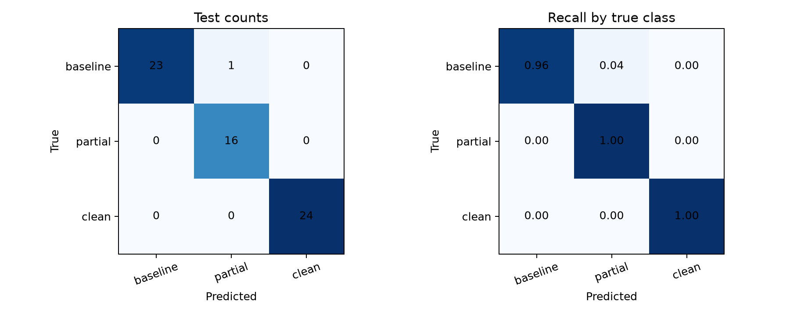
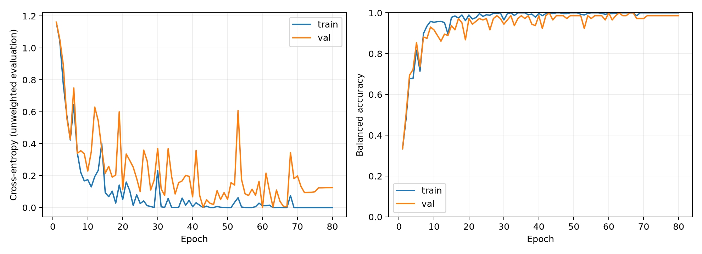
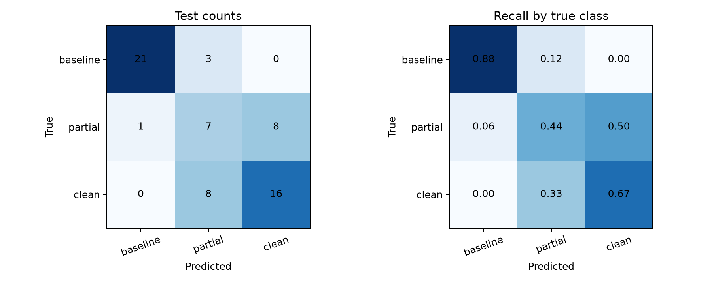
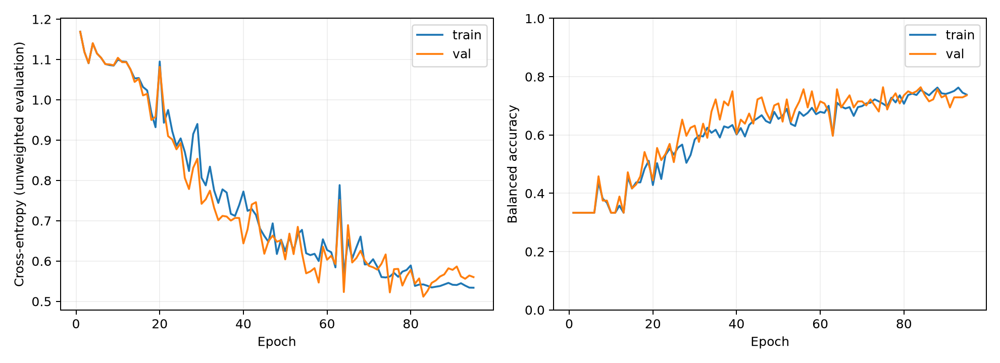

Stage classification, shared specimen splits. Intervals resample whole physical specimens. These are exploratory estimates from a small test cohort; repeated seeds do not add independent specimens.

| run | model | input | seed | n | accuracy | balanced_accuracy | macro_f1 | cross_entropy | roc_auc | balanced_accuracy_ci_low | balanced_accuracy_ci_high | macro_f1_ci_low | macro_f1_ci_high | bootstrap_valid |
|---|---|---|---|---|---|---|---|---|---|---|---|---|---|---|
| pointnext_s_geometry_seed42 | pointnext_s | geometry | 42 | 64 | 0.375 | 0.424 | 0.314 | 0.993 | 0.617 | 0.333 | 0.486 | 0.233 | 0.375 | 999 |
| tsgcnet_geometry_rgb_seed42 | tsgcnet | geometry_rgb | 42 | 64 | 0.984 | 0.986 | 0.983 | 0.218 | 0.992 | 0.958 | 1.000 | 0.949 | 1.000 | 999 |
| tsgcnet_geometry_seed42 | tsgcnet | geometry | 42 | 64 | 0.688 | 0.660 | 0.664 | 0.607 | 0.870 | 0.583 | 0.764 | 0.589 | 0.750 | 999 |





